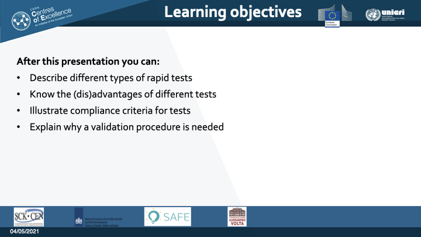

Narrative
Sheet 02 - Introduction
In this module, I will discuss different types of rapid tests for the
detection of Corona infections. Countries across the world are facing
difficulties containing COVID outbreaks. Testing and contact tracing
have a large impact on reducing transmission of the virus. To strengthen
the identification of people carrying the virus, there is a large demand
for rapid tests, which are also called lateral flow tests. Manufacturers
are competing on the market with different types of rapid tests,
assuring that their product is of the highest quality. So, if
manufactures are confident in the performance of their tests, do we need
to validated them ourselves? Before we handle this question, let us
first examine what types of rapid tests are available and what their
advantages and disadvantages are, and what they can be used for.
Sheet 03 – Learning Objectives

This presentation will take around 15 minutes. We will discuss the basic
principles of current Coronavirus tests and their advantages and
disadvantages. Different types of tests also have different compliance
criteria. The type of compliance criteria depends on how and for what
the test is used for. By the end of this module, you will understand why
test validation is needed. In the next module, we will learn about the
validation procedure itself.
Sheet 04 – Why validating?
Scandals on inferior medical devices are unfortunately common. How is it
possible that such devices are still being sold? How does this system
work and where do the responsibilities of different stakeholders start
and end?
As an example, in 2014, journalists made up a medical device, a Pelvic
Floor Net for the treatment of Pelvic Organ Prolapse. The product was a
fruit net for oranges. The journalists wrote a brochure and a technical
briefing for it. The conclusion was that their product met the
certificate requirements for medical devices and was allowed to to be
sold on the market. This is an extreme example, but it does expose the
shortcomings of regulatory affairs. That being said, if regulatory
affairs are too strict, it would be very hard to manage outbreaks such
as the one we are facing now.
For diagnostic tests being bought to market during the ongoing COVID-19
outbreak, quality control markings do not always guarantee a reliable
test as one type of test may work better in one setting and not in
another. Therefore, the test needs to be checked, or validated, to see
if it works in a slightly different setting and circumstance.
Sheet 05 – Types of Tests I

Different types of SARS-CoV-2 tests have different purposes.
In general, there are four types of tests for the detection of
SARS-CoV-2. On the left, you see a cross-section of the Coronavirus. The
virus particle has these yellow spikes on the outer membrane sticking
out. These spikes can be captured by antibodies that are attached to a
surface and subsequently coloured with a dye. A well-known example are
these rapid lateral flow tests. (Show rapid test for the camera).
Sheet 06 – Types of Tests II
These spikes are on the outside. To reach the inside of the virus, the
particle needs to be treated with specific reagents in a test tube. The
released genetic material of the virus can then be detected using the
Polymerase Chain Reaction analysis, or PCR test.
Sheet 07 – Types of Tests III
In a later stage of virus infection, the human body’s
immune system is catching up with the infection and is releasing
specific antibodies in the bloodstream. These specific antibodies can be
detected with the so called serology tests. This is an indirect
detection approach for exposure to the virus as it detects human
produced antibodies and does not detect the virus itself.
Sheet 08 – Types of Tests IV
Other kinds of molecules or biomarkers are released by the human body
during an infection. These molecules can be detected and recognized with
sensitive equipment. For example, spectrometry analyzers are used for
the detection of specific quantities of small volatile molecules such as
acetone, ethanol, and others. Other biomarker tests are biochemical
tests include C‐reactive protein, measures of anticoagulation or blood
clotting, and immune cells such as white blood cell count. Then there
also imaging-biomarkers, such as X-ray or CT-scan. These are commonly
available tests and may be helpful for the triage of people with
possible COVID‐19 in imaging the lungs
Antigen and PCR tests can directly detect SARS-CoV-2 viral particles,
while serology and biomarkers are indirect detection methods and rely on
how the human body reacts to infection. They each have their advantages
and disadvantages, depending on what they are exactly used for.
Sheet 09 – Characteristics I
Let’s compare these different types of tests.
Molecular or PCR-based tests are considered the gold standard. They are
versatile and the most reliable test for diagnosing covid patients.
Usually, these tests take a day: samples need to be transported to a
laboratory. Then the samples are processed, analyzed, checked, and
double-checked. Test reagents and equipment are expensive. Therefore, a
PCR test is only cost-effective when they are performed in large
quantities. Some PCR tests are less expensive or quicker, such as LAMP
and the GeneXpert. Still, these tests require specialized expertise and
lab equipment.
Serology is less expensive compared to molecular tests. In general,
serology is not used for the first diagnosis of Covid infection.
Antibody tests are likely to be available in laboratory form using
enzyme‐linked immunosorbent assay, or ELISA methods. But also as a
point‐of‐care test, using one or two spots of blood from a thumb prick
on a testing strip. It takes around 10 minutes for a positive answer.
Contrary to the antigen test. They are quick, cheap, and require little
training. The price, however, is that these rapid antigen tests are less
reliable.
Several other rapid tests are being developed, validated, and applied.
It ranges from breath analyzers to sniffing insect bees. I have grouped
these with ‘Others.’
Choosing the right testing method depends on the objective of the test
and the available resources. Is for diagnosing a patient? Or for
monitoring donated blood units?
Sheet 10 – Characteristics II
The most important indicators for the reliability of a test, are the
sensitivity, and specificity of the test. Let’s imagine we
have a population. Most of them, the blue ones, do not carry the
Coronavirus. The yellow ones carry the virus but don’t know
this yet. The number of viruses they have is very low and they do not
feel sick.
The red ones have high viral loads and are really sick with symptoms.
Sheet 11 – Characteristics III
The PCR test performs very well in being
’positive’ with persons carrying the virus.
Including the ones that are not sick. The test has excellent
sensitivity. There are hardly any false negative patients.
Sheet 12 – Characteristics IV
In another type of test, those persons that carry a low number of
viruses can be missed when the test has a low sensitivity. This type of
test is definitely not recommended in a setting with vulnerable persons,
for example in a maternity ward or an elderly home.
Sheet 13 – Characteristics V
With the uninfected people, here, the test result is always
‘negative.’ Hardly anyone gets a
false-positive result. The test has a great Specificity.
Sheet 14 – Characteristics VI
Low specificity comes when negative persons receive test result which
says they positive for the infection with the virus. Now, this does not
immediately mean that this test is useless. If this test is quick and
cheap, the ‘negative persons’ can carry on.
The positive ones, need to be double-checked with a more reliable test.
This, for example, would work in a setting for screening travellers.
For the sensitivity, it’s always better to have it as high
as possible. But in some settings, one has to make a trade-off. Less
sensitivity for a faster and cheaper test. This is a complicated
decision.
Sheet 15 – Setting
As showed, all types of tests have their advantages and disadvantages.
The first step before introducing a new test is to ask a few basic
questions:
For who is the test? Do we need to quickly screen passengers? Do we need
to diagnose a sick person? Do we need to monitor the environment or food
products?
What kind of samples are available? Throat or nose swabs? Feces?
Wastewater?
Where is the test conducted? At a laboratory? In a mobile health unit?
At home?
These questions are all part of formulating the objective when a new
test is to be validated.
Sheet 16 – Criteria
Once it is clear what the setting is, the list with tests can be further
shortened by setting several criteria. Do new reagents work with the
equipment already in the lab? What does the manufacturer state about the
sensitivity and specificity? And will the manufacturer be able to
provide enough test reagents for the near future? Also important is if
it is affordable? Are there any legal obligations before the test can be
purchased? Are the correct storage options available? This information
is all part of the validation plan.
Sheet 17 – Planning of Validation I
The reliability of a test does not only depend on the test itself. For
validating the test, processes associated with the collection and
production of the outcome needs investigation. It has to be confirmed
that all processes provide sufficient assurance that the results are
reliable. The validation also justifies why specific processes are
needed. Now, it is impossible to put all these processes into one
validation.
Sheet 18 – Planning of Validation II
There are many actors involved in the successful implementation of a
test. For example, if storage at customs was inadequate, the reagent
might have deteriorated and can have a direct impact on the reliability
of the tests. The lab may validate as much as they can, the test results
remain unreliable. Therefore, it can be very rewarding to sit down with
relevant stakeholders and put yourself in their situation. It gives a
better understanding of all challenges. By facing the challenges
together, you might come up with an alternative for choosing the
appropriate test.
Sheet 19 – Summary
There was an overview of the types of tests that are being applied for
detecting SARS-CoV-2. It is made clear that one cannot just simply
compare one test with another. Especially when they are applied in
different settings.